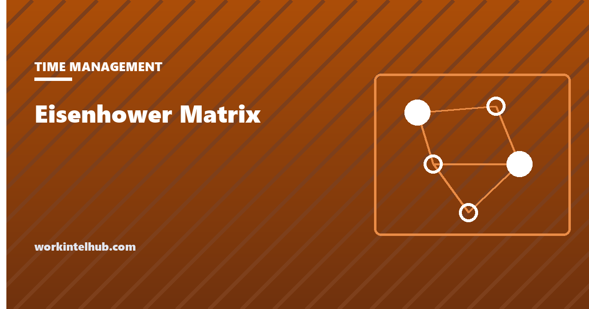

Eisenhower Matrix

The Eisenhower matrix sorts tasks on two questions, is it urgent and is it important, into four quadrants, each with its own instruction: do it now, schedule it, delegate it, or drop it.
It is named after Dwight Eisenhower, who did not invent it and did not quite say the line usually attributed to him. What he did say is more useful than the paraphrase, and the research on why people get the two questions confused explains what the matrix is actually for. Both are below, after a version of the matrix you can use.
Sort this week's list
1. Do now: urgent and important
2. Schedule: important, not urgent
3. Delegate: urgent, not important
4. Drop: neither
Saved in this browser only. The count under the matrix is the diagnostic: a week that lives in quadrant 1 is a planning problem, and a week that lives in quadrant 3 is a boundary problem.
The four quadrants
| Quadrant | Definition | Instruction | Typical contents |
|---|---|---|---|
| 1. Urgent and important | A real deadline and a real consequence | Do it now, yourself | Crises, the report due today, a client escalation |
| 2. Important, not urgent | Moves a goal; nobody is chasing it | Schedule it, and protect the slot | Planning, relationships, learning, prevention, the strategy document |
| 3. Urgent, not important | Somebody wants it now; it does not move your goals | Delegate, or do it fast and badly | Most email, most meetings, other people's deadlines |
| 4. Neither | No deadline, no consequence | Drop it | Busywork, habitual checking, meetings without a decision |
The matrix is not really about quadrants 1 and 4, which sort themselves. It is about the difference between 2 and 3, because those are the ones people confuse, in one direction: urgent things feel important, and important things that are not urgent feel optional.
What Eisenhower actually said
The usual quote is "What is important is seldom urgent and what is urgent is seldom important." Quote Investigator traced the source to an August 1954 address by Eisenhower to the World Council of Churches, in which he said: "I have two kinds of problems, the urgent and the important. The urgent are not important, and the important are never urgent." He attributed the line to "a former college president", not to himself, and the word "seldom" was added by later retellings.
The matrix itself was popularised decades later, most influentially in Stephen Covey's The 7 Habits of Highly Effective People in 1989, where it appears as the time management matrix. Eisenhower's contribution was the distinction; the grid came from others.
Why people default to urgent tasks
A 2018 paper in the Journal of Consumer Research by Meng Zhu, Yang Yang and Christopher Hsee named the pattern the "mere urgency effect": in a series of experiments, people chose tasks with short deadlines over tasks with larger payoffs, even when the urgent task was objectively worse and even when they knew it. Urgency, the authors found, captures attention on its own, independent of what is at stake, and the effect was stronger among people who described themselves as busy.
That is the finding the matrix is built to counter. Asking "is it important?" as a separate question from "is it urgent?" is the whole intervention. The tool above forces the two questions in that order, and the count beneath it shows where the week is actually going.
Using it without lying to yourself
Define important before you start. "Important" means it moves a goal you have written down. Without that, everything feels important and the matrix collapses into a to-do list with borders.
Be honest about quadrant 3. Most people's email lives there, and most people put it in quadrant 1 because the sender is waiting. A sender waiting is urgency, not importance.
Quadrant 2 needs a calendar, not a list. "Schedule it" means a block on a specific day, which is where time blocking takes over. Quadrant 2 items that stay on a list migrate to quadrant 1 eventually, as crises.
Delegating is not always possible. For an individual contributor, quadrant 3's instruction becomes "do it quickly, to the minimum standard, in a batched block". The techniques guide covers batching.
Re-sort weekly. The matrix is a snapshot. The useful signal is the trend: a week that mostly lived in quadrant 1 was planned badly the week before, and a week that lived in quadrant 3 needs a conversation about boundaries, not a better system. For the daily version of the same question, see eat the frog.
Key takeaways
- Two questions, four quadrants: do now, schedule, delegate, drop. The matrix exists to separate urgent from important.
- Eisenhower's 1954 line, credited to a college president, was that the urgent are not important and the important are never urgent. The grid came later, via Covey.
- The mere urgency effect: people choose short-deadline tasks over higher-payoff ones, even knowingly, and busy people do it more.
- Define important as moving a written goal before sorting, or everything lands in quadrant 1.
- Quadrant 2 needs calendar blocks, not a list. Unscheduled important work becomes next month's crisis.
- The weekly count is the diagnostic: too much quadrant 1 is a planning problem; too much quadrant 3 is a boundary problem.
Frequently asked questions
What is the Eisenhower matrix?
A prioritisation tool that sorts tasks by two criteria, urgency and importance, into four quadrants: urgent and important (do now), important but not urgent (schedule), urgent but not important (delegate), and neither (drop). It is also called the urgent-important matrix or the time management matrix.
Did Eisenhower invent the Eisenhower matrix?
No. In a 1954 speech he quoted a former college president as saying he had two kinds of problems, the urgent and the important, and that the urgent are not important and the important are never urgent. The four-quadrant grid was popularised much later, most notably by Stephen Covey in 1989.
What is the difference between urgent and important?
Urgent means there is a near deadline or someone is waiting. Important means the task moves a goal you actually hold. The two are independent: a colleague's request can be urgent and unimportant, and your own development work can be important and never urgent.
Why do I always end up doing urgent tasks?
Research on the mere urgency effect found that people choose tasks with short deadlines over tasks with bigger payoffs, even when they know the urgent one matters less, and that the pull is stronger for people who feel busy. Urgency captures attention on its own, which is why the matrix asks about importance separately.
What should I do with quadrant 2 tasks?
Put them on the calendar as specific blocks and protect the blocks. A quadrant 2 task left on a list tends to migrate to quadrant 1 later as a crisis. Scheduling is the instruction, and time blocking is the method for carrying it out.
How often should I use the matrix?
Weekly for planning and whenever the list feels out of control. The pattern over several weeks is more useful than any single sort: a week dominated by quadrant 1 was planned badly, and one dominated by quadrant 3 needs boundaries rather than a better tool.